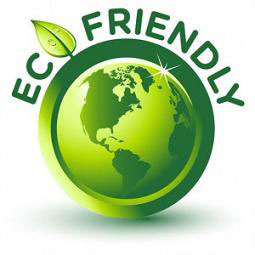

Why Green Bags

A Non Woven Bag is the Paramount Alternative to Plastic Bags for Daily Use
It is common knowledge that plastic bags are among the widespread pollutants in landfills and our surroundings in general. Unfortunately, these solid waste materials are one of the main reasons for the clogging of drains and the pollution of oceans. It even leads to the deaths of marine animals like sea turtles that mistake the floating plastic for jellyfish, ingest the refuse and sadly, perish. Due to this situation, bag manufacturers with a green conscience are constantly marketing a superior alternative to plastic and paper bags – the non woven bag. An increasing number of consumers as well as many industries around the world are using this high quality option today.
A non woven bag is made of spun bond non woven polypropylene (PP) cloth which is 100% recyclable. It decomposes without problems and burns completely without toxic contaminants. Notably, PVC coating and water is absent in manufacturing this synthetic compound compared to making paper which uses much water. These facts make this bag the better alternative to plastic or paper bags for daily use. Although paper can be recycled, the non woven carriers are more durable which assures less breakage. People must take into consideration that paper can be recycled until around three times because its fibers tend to be reduced significantly, which is important in maintaining its strength.
In a society that is driven by consumerism, it is essential to introduce green products to replace merchandise like plastic that are detrimental to the environment. Reusable and recyclable woven bags are also popular but its non woven counterpart is more preferred because almost all recycling facilities accept them. Nowadays, there is a higher production rate in the manufacturing of a non woven bag compared to its eco friendly counterparts. Furthermore, manufacturers create stylish designs and colors as well as offer services in screen printing and heat transfer full color printing to their buyers. The attractiveness of a non woven bag makes it more competitively priced on the market.
Aside from shopping and carrying various items, the reusable bag is also utilized by its patrons as a gift bag or a party giveaway. The individuals and industries appreciate the advantages of using it for their daily or special activities due to its strength, lightweight, softness and packable quality. Moreover, a non woven bag is liquid repellant, allows air circulation and is washable. Businesses like groceries, department stores and those in retail are just some of the frequent users of the non woven carriers. Those in the hospitality or food and beverage industry are also using the bag for their special goods like wine. Corporate companies make use of it as a promotional medium in their events. These real life examples just go to show that the product is a versatile and practical item. Without a doubt, people can gradually eradicate plastic bags on the market by shifting to an eco friendly alternative. Using a non woven carrier promotes an environment friendly way of living and an effective means of achieving a better, cleaner society.